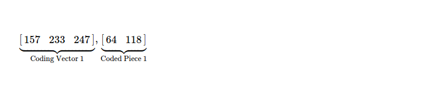

Last week I spent some time going through encoding, decoding process in Random Linear Network Coding,
this week I was exploring recoding part of RLNC, which is seemingly more interesting
because other block coding/ rateless coding techniques don't possess it.
One of the good parts of RLNC is it can provide Forward Error Correction
not only in point-to-point manner, but also in a fully distributed setup. The Random part
of RLNC denotes coding vector creation is more flexible, while still being equally ( if not more ) performant.
Each peer can randomly draw coefficients without any need of coordination & code original pieces/
recode already coded pieces ( received from some other peer ) into newly coded pieces, which can be distributed to next hops
who may again recode if needed, while coded pieces still staying decodable as long as
enough number of linearly independent pieces are found. RLNC allows flexible generation size
choice i.e. how many pieces to code together is easily configurable. And it enables usage
of sliding window technique while coding pieces. RLNC is able to
effectively solve p2p file sharing system's rarest piece selection problem to a great
extent, because each piece is quite equally important to peers interested in collecting all pieces
for constructing whole file.
Source peer can spread N-many original pieces along with few coded pieces throughout network
& may leave. Other peers can create more coded pieces using any combination of
coded/ uncoded pieces available to it. After sometime when some new peer is interested in
constructing whole file, it'll simply collect minimum N-many useful pieces from any peers.
As long as collected pieces together encompass all original pieces, data is fully constructable.
RLNC provides with some level of inherent security because if atleast N-many pieces
are not available, data can't be decoded. Though I don't think it's something to be relied on
always, due to presence of flexible generation based RLNC techniques, where it's possible to decode from
stream of data i.e. not waiting for all pieces to arrive & then decode.
One problem with RLNC is, while some peer only attempting to collect useful pieces neighbours might endup
sending linearly dependent pieces ( read useless pieces ), because they don't know what's available with peer.
In these scenarios, some sort of protocol level coordination is required for letting neighbours know what's
available & what peer is looking for. If this kind of coordination is not used from protocol level
peers might be doing unnecesary coding/ recoding which can be avoided. These coordinations also
help peers in constructing whole piece faster.
I'll dig deep into coding, decoding & recoding for full RLNC scheme, where I take a byte slice;
generate coded pieces, which are recoded & newly coded pieces are made available; some useful pieces are collected
from set of all available pieces for attempting decoding into original byte slice.
I also explain, how to choose useful pieces ?
I start by taking a byte array i.e. [97, 110, 106, 97, 110], which I plan to code. For coding using RLNC, I need
to fix one finite field from where I'll be drawing elements at random i.e. coding coefficients.
As each element of byte array can be represented using 8-bits ( max possible byte 255 ),
I choose Galois Field 2**8, which also has 256 elements ( from 0 to 255 ).
GF(2**8) is an extension of prime field GF(2). All arithmetic operations
in this finite field i.e. addition & multiplication result into element of same field.
I intensionally skipped subtraction & division, because they're addition & multiplication in disguise, respectively.
I choose x^8 + x^4 + x^3 + x^2 + 1
as irreducible polynomial, which behaves like a prime number i.e. has only 1 & self as factors.
$ python3
>>> import galois
>>> gf256 = galois.GF(2 ** 8) # extension field
>>> irr = gf256.irreducible_poly
>>> irr
Poly(x^8 + x^4 + x^3 + x^2 + 1, GF(2)) # default irreducible polynomial for field
>>> galois.poly_factors(irr)
([Poly(x^8 + x^4 + x^3 + x^2 + 1, GF(2))], [1]) # only two factors i.e. 1 & self
One more operation which I need to perform on finite field elements is inverse. Multiplicative inverse can be easily calculated using lookup table ( good for small field sizes ).
>>> gf256(1) / gf256(129)
GF(84, order=2^8)
Now if I check result of multiplication of 129 & 84 in GF(2**8), it must be 1.
>>> gf256(84) * gf256(129)
GF(1, order=2^8)
Now I've to divide byte slice into set of pieces. Each piece will have few symbols, where each symbol is a Galois Field element & I've already decided to work with GF(2**8). I pack 2 field elements together and create a piece. So, I've 3 pieces, with each of first two having 2 symbols and last one having 1 symbol.
But for performing RLNC, I need to have all pieces consisting of same number of symbols,
which is why I pad 0 at end of last piece.
Pieces are ready to be coded now.
As I've 3 pieces to be coded together, I randomly draw 3 elements from GF(2**8) & use as first coding vector.
>>> coding_vector = [157, 233, 247]
Coding is simply performing this matrix multiplication.
One thing to note, pieces are added together by performing symbol by symbol addition. Resulting coded piece has two symbols then.

Following this thoery, I try to construct first coded piece. I've to represent coding vector & original pieces as polyomials. First symbol of first piece i.e. 97 can be written as x^6 + x^5 + 1.
Similarly I write all of the field elements as polynomials.

All arithmetic operations need to be performed on chosen finite field & resulting elements also end up in same field. I'll construct both symbols of first coded piece.
>>> gf256(157) * gf256(97) + gf256(233) * gf256(106) + gf256(247) * gf256(110)
GF(64, order=2^8) # symbol 1
>>> gf256(157) * gf256(110) + gf256(233) * gf256(97) + gf256(247) * gf256(0)
GF(118, order=2^8) # symbol 2
First coded piece along with randomly chosen coding vector, used for construction.
This way, I again randomly draw 3 elements from GF(2**8), which I use for constructing second coded piece. This time I get [160, 28, 233] & while trying to construct both symbols of second coded piece, I follow aforementioned formula of symbol by symbol addition.
>>> gf256(160) * gf256(97) + gf256(28) * gf256(106) + gf256(233) * gf256(110)
GF(185, order=2^8) # symbol 1
>>> gf256(160) * gf256(110) + gf256(28) * gf256(97) + gf256(233) * gf256(0)
GF(176, order=2^8) # symbol 2
Second coding vector & respective coded piece is here. One thing to note, these two need to be kept together & when transfered over wire to some other peer this association must not be lost otherwise piece won't be helpful while attempting to recode/ decode.
Similarly I construct two more coded pieces.
Time for recoding, where I take 4 coded pieces & randomly take a combination of those for constructing recoded pieces. As I've 4 pieces to combine, I've to randomly draw 4 coefficients from GF(2**8). I generate new coded piece as I did before.
>>> (re)coding_vector = [102, 82, 165, 0]
>>> gf256(102) * gf256(64) + gf256(82) * gf256(185) + gf256(165) * gf256(20) + gf256(0) * gf256(171)
GF(197, order=2^8) # symbol 1
>>> gf256(102) * gf256(118) + gf256(82) * gf256(176) + gf256(165) * gf256(130) + gf256(0) * gf256(28)
GF(25, order=2^8) # symbol 2
If I check my (re)coding vector, it has dimension of 1 x 4, while all coding vectors of coded pieces ( 4 of them ) having dimension of 1 x 3. Surely I need to process this recoding vector to make it 1 x 3. If I take a look at matrix constructed by all coding vectors, it's 4 x 3.
And intuition is correct, I have to perform following matrix multiplication to get final coding vector for this recoding step, which is to be associated with respective recoded piece & can be distributed to peers.
So, (re)coded piece & respective coding vector is here.
In similar way, I randomly choose 4 coefficients & recode coded pieces to construct new coded piece & respective coding vector.
It's good time to take a look at what I've done so far. I check how many coded pieces I have now, along with their respective coding vectors.
I move to decoding step, where I randomly choose 3 useful pieces & attempt to reconstruct original byte slice. I need to choose 3 useful pieces, because I coded 3 original pieces & after several rounds of coding/ recoding I've now 6 coded pieces. If seen from mathematical point of view, this is nothing but solving linear algebra problem, where I need to have at least 3 equations for finding values of 3 unknowns. These unknowns are original pieces, known equations are coding vectors & coded pieces.
Speaking of collecting useful pieces, it denotes I need to select linearly independent
pieces. Everytime I choose one piece from available ones, I need to make a check on whether
rank of coding matrix increases by 1 or not. If it doesn't increase, this packet is linearly
dependent with what I already have --- meaning it's not useful. I attempt to choose next useful one.
I stop as soon as I find rank of my coding matrix has reached 3 because I need to have 3 equations
for finding out original 3 pieces.
First I choose piece with coding vector [160, 28, 233], which increases rank to 1
compared from rank 0 of empty matrix.
>>> mat = gf256([[]]) # empty matrix
>>> import numpy as np
>>> np.linalg.matrix_rank(mat)
0
>>> mat = gf256([[160, 28, 233]])
>>> np.linalg.matrix_rank(mat)
1
Now I randomly collect piece with coding vector [189, 244, 80], which increases rank to 2.
>>> mat = gf256([[160, 28, 233], [189, 244, 80]])
>>> np.linalg.matrix_rank(mat)
2
Though I don't have any piece with coding vector [135, 57, 63], but for a moment I assume I do. Now I check whether this piece is useful or not. And turns out coding matrix's rank doesn't increase, so this imaginary piece can be ignored.
>>> mat = gf256([[160, 28, 233], [189, 244, 80], [135, 57, 63]])
>>> np.linalg.matrix_rank(mat)
2
Finally I choose another useful piece i.e. with coding vector [157, 233, 247], which makes rank of coding matrix 3. Now inverting this 3 x 3 matrix & multiplying with coded pieces, gives me original pieces back.
>>> mat = gf256([[160, 28, 233], [189,244,80], [157, 233, 247]])
>>> np.linalg.inv(mat)
GF([[ 87, 131, 95],
[ 0, 64, 187],
[250, 121, 131]], order=2^8)
For constructing back original pieces, I follow same rule as used when coding.
Reconstructed pieces are same as original one.
>>> gf256(87) * gf256(185) + gf256(131) * gf256(245) + gf256(95) * gf256(64)
GF(97, order=2^8) # symbol 1 of piece 1
>>> gf256(87) * gf256(176) + gf256(131) * gf256(190) + gf256(95) * gf256(118)
GF(110, order=2^8) # symbol 2 of piece 1
>>> gf256(0) * gf256(185) + gf256(64) * gf256(245) + gf256(187) * gf256(64)
GF(106, order=2^8) # symbol 1 of piece 2
>>> gf256(0) * gf256(176) + gf256(64) * gf256(190) + gf256(187) * gf256(118)
GF(97, order=2^8) # symbol 2 of piece 2
>>> gf256(250) * gf256(185) + gf256(121) * gf256(245) + gf256(131) * gf256(64)
GF(110, order=2^8) # symbol 1 of piece 3
>>> gf256(250) * gf256(176) + gf256(121) * gf256(190) + gf256(131) * gf256(118)
GF(0, order=2^8) # symbol 2 of piece 3
I've successfully coded, recoded & decoded pieces using RLNC.
One thing I noticed, rather than waiting for all pieces to be collected when decoding
& then invert the coding matrix, it's better to prograssively decode.
As soon as new useful piece is found, coding matrix is converted to reduced row echelon
form using sort of Gaussian Elimination technique. This keeps matrix prepared for revealing original
pieces, and as soon as rank reaches 3 original pieces are readily available.
I also append coded piece after respective coding vector i.e. I work with augmented matrix.
So I start with [160, 28, 233, 185, 176].
>>> mat = gf256([[160, 28, 233, 185, 176]])
>>> mat.row_reduce()
GF([[1, 77, 174, 32, 220]], order=2^8
Next coded piece which was discovered [189, 244, 80, 245, 190], is now added to augmented matrix & again converted to rref.
>>> mat = [[1, 77, 174, 32, 220], [189, 244, 80, 245, 190]]
>>> gf256(mat).row_reduce()
GF([[1, 0, 101, 105, 110],
[0, 1, 163, 128, 97]], order=2^8)
Last coded piece along with respective coding vector when added as new row of
augmented decoder's matrix & row reduced by performing elementary
row operations, reveals original pieces i.e. [[97, 110], [106, 97], [110, 0]]
where last 0 is what I padded during coding.
Recovered byte slice [97, 110, 106, 97, 110].
>>> mat = [[1, 0, 101, 105, 110], [0, 1, 163, 128, 97], [157, 233, 247, 64, 118]]
>>> gf256(mat).row_reduce()
GF([[ 1, 0, 0, 97, 110],
[ 0, 1, 0, 106, 97],
[ 0, 0, 1, 110, 0]], order=2^8)
I find this idea of progressively decoding as soon as new useful piece comes in
from peers, to be more practical.
The whole coding, recoding & decoding flow from high level. This simulation setup
is kept here for future reference.
After full RLNC scheme, I plan to understand other variants of RLNC along with their
respective benefits & drawbacks. Particularly I've interest in Fulcrum Codes.
I plan to make use of RLNC along with custom protocol built on top of TCP/ UDP.
RLNC seems to be a good candidate for p2p mesh networks, which need to be explored more.
Have a great time !